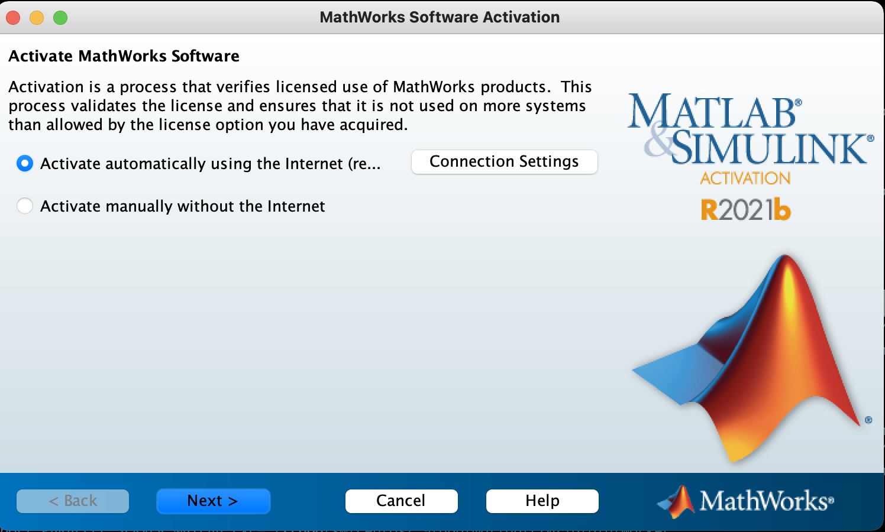

TRUBA’da MATLAB Lisansının Tanıtılması#
TRUBA üzerinde MATLAB çalıştırmak isteyen kullanıcıların kendilerine ait bir lisansa sahip olması gerekmektedir. Bu lisans akademik ya da floating (kayar) lisans olabilir.
Lisans türleri hakkında bilgiye https://www.mathworks.com/pricing-licensing.html adresinden erişebilirsiniz. Ayrıca üniversitelerin bilgi işlem merkezlerinden de lisansınız hakkında detaylı bilgi edinebilirsiniz.
MATLAB, sahip olunan lisans türüne göre TRUBA üzerinde farklı şekillerde çalıştırılabilir.
Akademik (TAH: Total Academic Headcount) Lisansı Olan Kullanıcılar#
EGI ile MATHWORKS arasındaki anlaşma sayesinde kullanıcılar, “MATLAB Parallel Server lisansları” ile EGI üyesi ülkelerin süperbilgisayar merkezlerinde MATLAB çalıştırabilmektedirler. Akademik lisansınızın Mathworks üzerinden doğrulanabilmesi için grafik ekrana ihtiyaç duyulmaktadır. Bu lisansa sahip olarak TRUBA üzerinde MATLAB çalıştıracaksanız birkaç metot bulunmaktadır.
Kişisel bilgisayarınızda MATLAB çalıştırarak
TRUBA üzerindeki kullanıcı arayüz sunucularından Grafik Ekran Bağlantısı alarak
ARF-UI Üzerinde MATLAB Çalıştırarak TRUBA’ya İş Göndermek İçin Akademik Lisans Tanımlaması#
Öncelikle kişisel lisansınızın TRUBA üzerinde aktif edilmesi gerekmektedir. Lisansınızı aktifleştirmek için arf-ui kullanıcı arayüz sunucularından herhangi birine grafik arayüzü desteği ile bağlanmak gereklidir. TRUBA kullanıcı arayüzlerine iki farklı şekilde grafik arayüzü bağlantısı yapılabilir.
Open OnDemand ile bağlanarak. “Interactive Apps” sekmesinden
ARF Desktop(Linux XFCE Desktop) oturumu başlatılabilir. Linux Masaüstü üzerinde çalıştırılacak uygulamalar, küme üzerindeki hesaplama sunucularında çalıştırılmış olacaktır. Linux Masaüstünde terminal uygulamasından verilecek komutlarla sunucu üzerinde MATLAB da dahil olmak üzere herhangi bir görsel uygulama çalıştırılabilir.ssh -XY username@sunucu_adikomutu aracılığıyla grafik arayüz alarak
Arayüz sunucusunda terminal ekranı aldıktan sonra MATLAB ile küme profili oluşturmaya başlayabiliriz.
# Sistemde yüklü MATLAB versiyonlarını görmek için
module avail -t 2>&1 | grep -i matlab
Sistem üzerinde farklı versiyonlar yüklü olabilir (R2021b, R2024a vb). Mevcut durumda ARF kümesinde R2024a versiyonu kurulu olarak bulunmaktadır. İlgili versiyonu kullanmak için öncelikle bu yazılımı module load komutu ile yüklemeniz gerekecektir.
## sisteminizde daha önceden yüklü modülleriniz olabilir.
## Dolayısıyla herhangi bir çakışma olmaması için öncelikle yüklü modülleri temizleyiniz
module purge
## modülü yüklemek için
module load apps/matlab/2024a
## modülün doğru şekilde yüklendiğini doğrulamak için
module list
## MATLAB'i calistirmak icin
matlab -nosplash
MATLAB’ı ilk kez çalıştırdığınızda aşağıdaki gibi bir sorgu ekranı açılacak ve lisansınızı aktive etmeniz istenecektir.
Lisans doğrulamasını gerçekleştirdikten sonra kendi (yerel) bilgisayarınızda MATLAB’ı çalıştırarak SLURM küme ayarlarını gerçekleştirebilirsiniz.
Yerel bilgisarınızda kurulum ile ilgili önemli bilgilendirmeler için ve ilgili küme ayarlarını yapmak üzere gerekli işlem adımları için Kişisel Bilgisayarınızda MATLAB Çalıştırırak TRUBA’ya İş Göndermek yönergesini takip edebilirsiniz.
Ayar dosyasını bir kez çalıştırmanız yeterlidir. Daha sonra Hesap ve Kuyruk Parametrelerinin Yapılandırması yönergelerini takip ederek hesaplama kümelerine iş gönderebilirsiniz.
Uyarı
Kişisel bilgisayar üzerinden çalıştırdığınız MATLAB ile TRUBA kümesine iş göndermek için /arf/sw/scripts/matlab/matlabScripts/truba.nonshared.R2024a ayar dosyasını kullanmanız gerekecektir. Aksi takdirde işlerinizde hata ile karşılaşırsınız.
Kayar (Floating) Lisansı Olan Kullanıcılar#
Lisans doğrulaması, kullanıcının kendi kurumundaki lisans sunucusu tarafından yapılır. Bu nedenle kurumdaki lisans sunucusunun TRUBA sunucularına lisans doğrulaması için erişim izni vermesi gereklidir. TRUBA’nın çıkış IP adresi 193.140.99.241’dir. Bu yetki ile ilgili kurumunuzun bilgi işlem daire başkanlığıyla iletişime geçiniz.
Kayar lisansına sahipseniz bir slurm betik dosyası hazırlayarak, işlerinizi sbatch komutu ile iş kuyruğuna gönderebilirsiniz.
TRUBA üzerinde halihazırda bazı MATLAB versiyonları yüklü durumdadır. Bu yazılımlar zaman içerisinde yeni versiyonlar eklendikçe güncellenmektedir
Sistemde yüklü yazılımları module available komutu ile görebilirsiniz. Moduller hakkındaki ayrıntılı bilgiye moduller-truba sayfasından erişim sağlayabilirsiniz.
# Sistemde yüklü matlab versiyonlarını görmek için
module avail -t 2>&1 | grep -i matlab
Uyarı
TRUBA üzerinde küme yönetimi ve iş zamanlayıcı olarak SLURM kullanılmaktadır. Kümede iş çalıştırmadan önce SLURM betik özellikleri hakkında bilgi edinmiş olmanız beklenmektedir. İş göndereceğiniz hesaplama kümeleri ile ilgili bilgiye Hesaplama Kümeleri sayfasından erişebilirsiniz.
Lisans dosyanızı TRUBA arayüz sunucusuna transfer ediniz. Bunu terminal aracılığıyla scp komutu ile yapabileceğiniz gibi winscp, filezilla vb. gibi SFTP yazılımları aracılğıyla da gerçekleştirebilirsiniz.
## username kısmını TRUBA kullanıcı adınızla değiştirmeyi unutmayin
scp -r "lisans_dosyanızın_bilgisayarınızdaki_yeri" username@172.16.6.11:/arf/home/username/


{kind=link}
{kind=link}
{kind=link}